A dynamical variational auto-encoder trained only on mixtures of instrument
notes (RWC), with no isolated sources, separates two-note mixtures of real instrument
recordings from the NSynth test set. These examples are out of sample: no NSynth audio was used
in training or validation. It has 5 outputs. The two closest to the true notes are
shown with their SI-SDR; the remaining outputs carry the share of the output energy given under
each example. Spectrograms share one colour scale per example.
Code, pretrained model and paper references:
github.com/jundsp/DVAE-BSS. From Chapter 6 of
J. Neri, Bayesian Hierarchical Modeling and Inference of Mixed Audio Sources, Ph.D.
dissertation, McGill University, 2024.
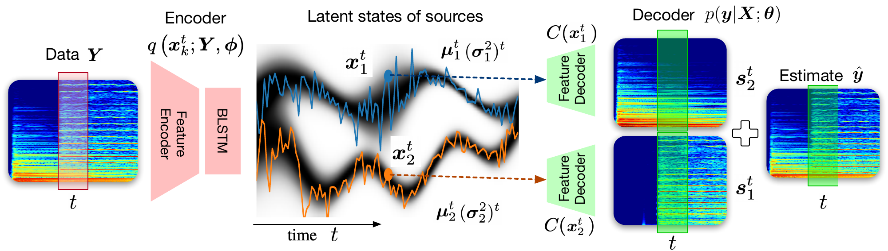
Example 1
reed + guitar, 7 semitones apart, second note starts 0.50 s later, NSynth notes reed_acoustic_011-065-075 and guitar_acoustic_014-058-050 (test-set item 0).
mixture
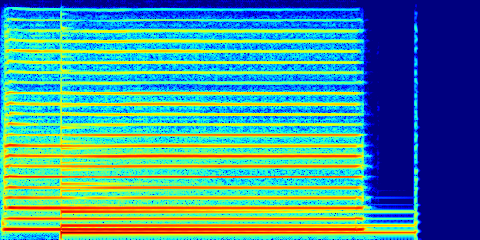
true notes
note 1
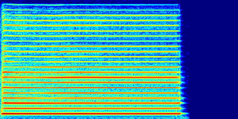
note 2
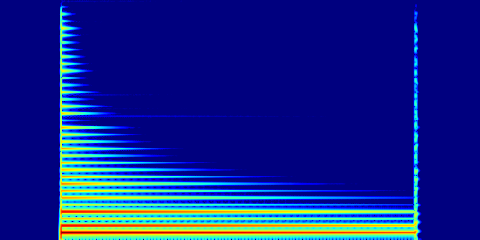
separated
output for note 116.2 dB
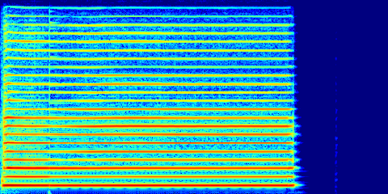
output for note 222.6 dB
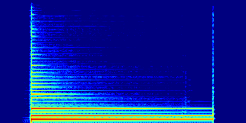
Other 3 outputs: 0.00 % of the output energy.
Example 2
brass + guitar, 8 semitones apart, second note starts 0.30 s later, NSynth notes brass_acoustic_046-059-075 and guitar_acoustic_021-067-127 (test-set item 1).
mixture
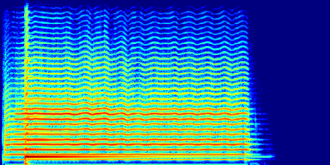
true notes
note 1
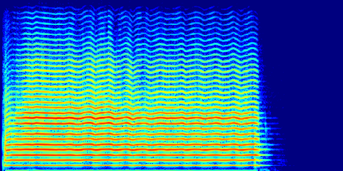
note 2
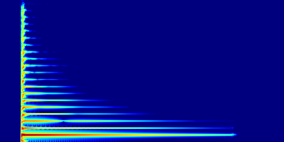
separated
output for note 119.4 dB
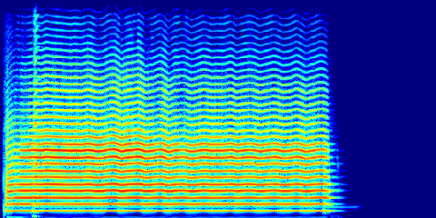
output for note 214.5 dB
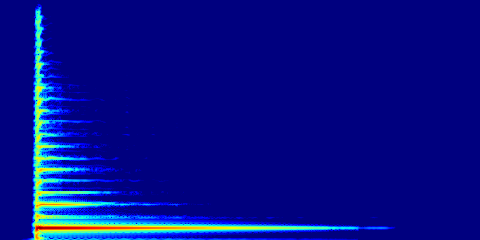
Other 3 outputs: 0.00 % of the output energy.
Example 3
string + keyboard, 5 semitones apart, second note starts 0.40 s later, NSynth notes string_acoustic_056-064-100 and keyboard_acoustic_004-059-127 (test-set item 2).
mixture
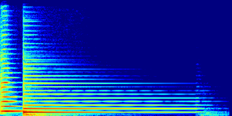
true notes
note 1
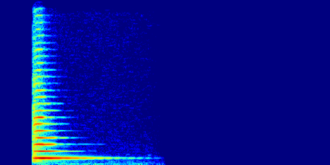
note 2
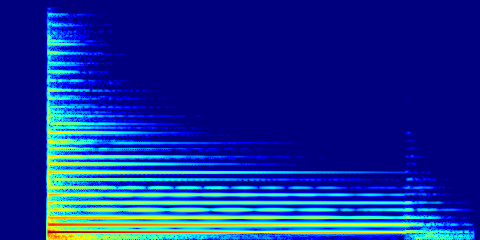
separated
output for note 120.8 dB
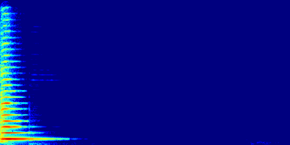
output for note 226.2 dB
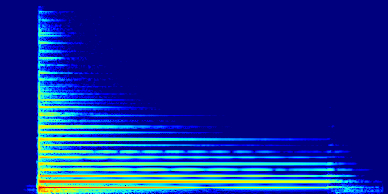
Other 3 outputs: 0.00 % of the output energy.
Example 4
flute + mallet, 9 semitones apart, second note starts 0.40 s later, NSynth notes flute_acoustic_002-072-127 and mallet_acoustic_062-063-100 (test-set item 3).
mixture
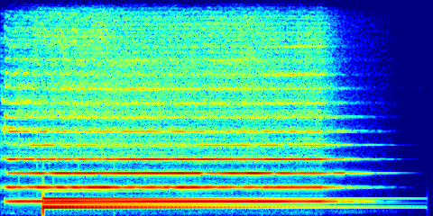
true notes
note 1
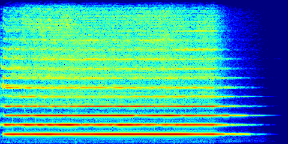
note 2
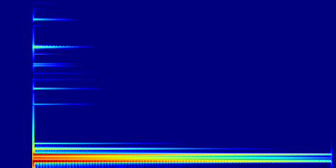
separated
output for note 122.1 dB
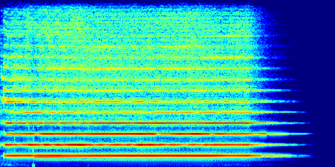
output for note 213.6 dB
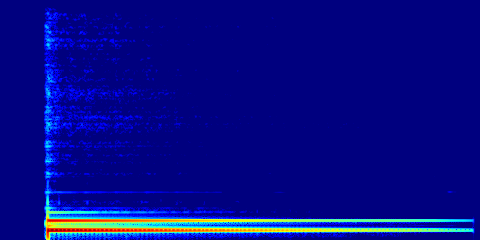
Other 3 outputs: 0.00 % of the output energy.
Example 5
brass + brass, 8 semitones apart, both start together, NSynth notes brass_acoustic_046-059-075 and brass_acoustic_046-067-075 (test-set item 4). Same instrument: two notes of the trumpet from Example 2, with the same timbre and vibrato. The notes stay in separate outputs with little leakage, but sound rougher than in Example 2, where this trumpet note is mixed with a guitar.